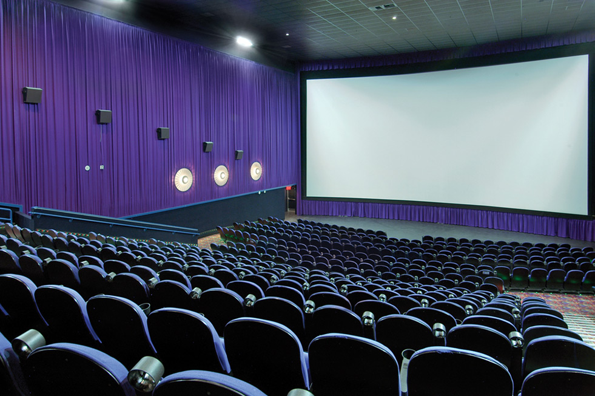

When I am not being tortured with school-related work, there are many other things that I do. Let's start with the weekends. Although I suck badly at it, I sometimes play basketball on the weekends. Other times, I go out with my family on the weekends, to various places. Other times, such as Fridays after school, I go to the movies with my friends. What kinds of movies do we watch? Well, that's not important, I'm just telling you that we do. If I'm not doing any of these activities and am just at home doing nothing, then I might turn on my xbox and play a game or watch youtube videos on it. No matter what the activity, at the end of the day, I will just sit back, relax, and think about all the important work I could have been doing, and the time I killed by not doing it.
